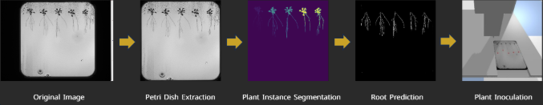

Building intelligent systems that bridge research and real-world impact — NLP pipelines, computer vision, and MLOps at scale.
I'm a fourth-year Data Science & AI student at Breda University of Applied Sciences, passionate about applying machine learning to problems that actually matter.
My work spans computer vision, NLP, reinforcement learning, and MLOps — always with an eye toward production-ready, deployable solutions. I've collaborated directly with industry clients including NPEC, NAC Breda, ANWB, and De Keuken Groep.
I believe the best AI isn't just technically correct — it's explainable, fair, and built for real people. That philosophy runs through every project I build.
Currently looking for a full-time internship starting as soon as possible, where I can contribute to data-driven innovation at scale.
Replacing manual truck loading decisions for one of the Benelux's largest kitchen manufacturers with an intelligent 3D bin packing system — awarded Top 3 across three categories by BUas Data Science & AI mentors and supervisors.
Kitchen cabinets present unique logistics challenges — they're bulky, fragile, and must be loaded in precise sequences to enable efficient unloading at multiple delivery stops. DKG Group, one of the largest kitchen manufacturers in the Benelux, was experiencing suboptimal truck utilisation (around 60%) due to manual loading decisions, resulting in increased transportation costs and safety risks.
I designed intelligent 3D bin packing algorithms that respect real-world constraints: LIFO (Last In First Out) requirements for multi-stop deliveries, fragility rules preventing stacking on delicate items, weight distribution for vehicle safety, and label visibility after rotation. The system processes DKG's dataset of over 1 million items across thousands of transport orders, comparing multiple algorithm approaches with real-world constraint validation at each stage.
Working directly with DKG's warehouse staff provided invaluable operational insights — weight distribution tracking, sectional load securing, and damage prevention strategies — that significantly improved algorithm design beyond what pure academic approaches would achieve. The final deliverable includes automated PDF generation for loading checklists and cabinet stickers, enabling seamless integration into existing warehouse workflows.
Partnered with ANWB and the Municipality of Breda to predict reckless driving behaviours from real telematics data — building a system that identifies dangerous incidents before they escalate into accidents.
Roads in Breda had unpredictable danger zones driven by changing weather, blocked sightlines, and areas where drivers consistently behaved recklessly — yet people were unaware of these hotspots. ANWB wanted a data-driven answer: how can real-time data and analytics reduce road accidents?
I led the machine learning pipeline for Team 9. ANWB provided raw driving telematics data, but predicting incident type required much richer context. I created SQL views to merge the driving dataset with external weather data and road condition sources. The full preprocessing pipeline covered view creation, missing value imputation, date column handling, encoding, normalisation, distribution analysis, and K-Means clustering of high-risk locations.
Three model architectures were trained and compared: Random Forest, Gradient Boosting, and CNN. After 9 iterations with hyperparameter tuning, the Gradient Boosting model achieved 84% accuracy. The project was classified as high-risk AI under the EU AI Act — Articles 6, 9, 10, 11, 13, 14, and 15 were applied throughout.
The system was deployed as a Streamlit application for internal ANWB stakeholders and a FlutterFlow mobile app for ANWB customers. The test suite achieved 99% coverage across both.
A full end-to-end AI pipeline for the Netherlands Plant Eco-phenotyping Centre: automating root segmentation and measurement from Petri dish images using computer vision, then precisely delivering inoculants to identified root tips via a PID-controlled and RL-trained robotic arm.

The Netherlands Plant Eco-phenotyping Centre is at the forefront of sustainable agriculture research. A key challenge: automating root segmentation from images to enable accurate root detection, then precisely delivering inoculants to the correct root tips using robotics. This project addresses both end-to-end.
On the vision side, I built a U-Net segmentation pipeline that separates Petri dishes from background interference and isolates plant structures — seeds, shoots, and roots — achieving F1: 0.85 for root mask prediction. Primary root length was then measured using Dijkstra's algorithm on the segmented output.
On the robotics side, I developed a PID controller for the OT-2 liquid-handling robot, achieving under 1 mm inoculation precision. In parallel, I trained a PPO reinforcement learning agent that autonomously navigated to the correct root tips. The comparative analysis showed PID wins on accuracy; RL wins on speed.
An end-to-end NLP pipeline that classifies 7 emotional states from Arabic video content — transcribing speech, translating it, classifying emotion, and explaining model decisions, all the way to cloud deployment.
Arabic NLP presents unique challenges: morphologically rich, dialectally diverse, and underrepresented in standard toolchains. This project tackled the full pipeline from raw video to deployed model.
Whisper handled Arabic speech transcription. A pretrained translation model converted Arabic text to English for cross-lingual transfer. The emotion classifier — MARBERT fine-tuned on 39,000+ labelled sentences across 7 emotion categories — achieved F1: 73. SHAP and LIME were applied for interpretability. The full stack: FastAPI, CLI, Streamlit, Docker, and Azure ML deployment.
A CNN classifying benign vs malignant skin lesions — designed with explainability and skin tone fairness as core requirements from day one. Four model iterations from a simple CNN to MobileNetV2 transfer learning, reaching 92% accuracy.
Most dermatology AI systems were trained on datasets skewed toward lighter skin tones, leaving patients with darker complexions underserved. This project was built to address that directly.
Dataset self-curated via Selenium scraping, manual collection, and Kaggle. Four model iterations: custom CNN baseline → Dropout + augmentation → MobileNetV2 transfer learning (92% accuracy) → 160x160 speed trade-off. Fairness Through Awareness was applied throughout — skin type as explicit sensitive attribute, Equal Opportunity Difference = 0.025 identified and documented. LIME (1000 perturbation samples) and Grad-CAM applied for clinical-grade explainability. Error analysis focused on false negatives — the highest clinical risk failure mode.
Analysed professional football players across 114 metrics to predict market value and optimal playing positions — built as a data-driven scouting tool for NAC Breda's analytics team.
NAC Breda needed a data-driven way to answer a persistent question: where does a player actually perform best? With 114 features — physical, passing, defensive, attacking — I built a multi-class classification pipeline where Random Forest delivered the strongest position prediction results. A Ridge + TruncatedSVD pipeline achieved R² = 0.889 for predicting expected assists (xA per 90).
Beyond the models: a full MySQL database management system, gradient descent implemented from scratch in NumPy to validate the regression, and a Streamlit app for live market value comparisons — all delivered to the client. Ethical documentation was central: class imbalance was honestly reported and GDPR analysis applied throughout.
Does economic growth inevitably come at the cost of the environment? This project investigates that question using World Bank data across Australia, Germany, and France — the answer is more nuanced than expected.
The research question: to what extent does a country's economic development influence its carbon emissions and greenhouse gas levels? I sourced data from the World Bank and data.gov — CO2, GHG, Real GDP growth, and pollution-related mortality across 2014–2019. The three countries were chosen deliberately to represent different growth-emissions relationships.
Data cleaning done entirely in Power Query: column trimming, type conversion, custom IF function columns, and merging GDP and GHG tables for direct visual comparison. The final Power BI dashboard covers three pages: GDP trends, GHG vs GDP overlay, and pollution-related deaths. Headline finding: correlation coefficient of −0.01 — far weaker than assumed.
Applied machine learning, data science, and AI engineering through real-world client projects. Hands-on experience across computer vision, NLP, reinforcement learning, and MLOps. Working in cross-functional teams to deliver production-ready AI solutions for industry clients.
I'm actively looking for a full-time internship (36–40 hrs/week). If you're working on interesting ML or AI problems, reach out — I'd love to talk.